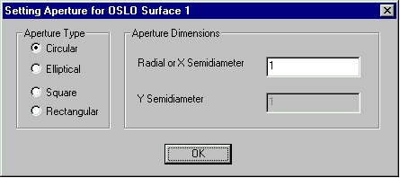

The second step in the OSLO to ASAP translation process is to
select the ASAP filename, and set several translation options.
Note: The translator overwrites an existing ASAP file if you keep the
default ASAP filename or type a filename into the edit box. If you are unsure
whether or not the file currently exists or want to protect an existing ASAP
file, click the BROWSE button to display a Save As dialog. Review the contents
of the current directory and enter a new filename. The translator does not
overwrite an existing file if you click the
BROWSE button.
The remainder of this dialog contains the following translation
options:
| Annotate ASAP INR file | Writes out explanations and comments interspersed with the
ASAP commands. This is useful if you are a novice user who wants to understand
more about ASAP syntax, or for documentation purposes. (Default: no
annotation.) |
| Translate dummy surfaces
| “Dummy surfaces” are defined by this translator as surfaces
that have the same refractive media on each side, and are coincident with the
subsequent surface. While these types of surfaces are commonly used in lens
design programs to restore coordinate systems in tilted and decentered systems,
they can mislead the physical raytrace algorithm in ASAP and cause raytrace
errors. (Default: do not translate dummy surfaces.) |
| Unassigned Apertures
| Since ASAP must know the actual apertures of each object,
these must be supplied even if they are missing from the OSLO file. The
translator allows for two options: |
| Prompt on surface-by-surface basis during
translation | Displays a
Setting Aperture dialog box for each surface whose aperture
information is missing. Select the type of aperture (circular, elliptical,
square, or rectangular) and dimensions at that time. (Default: prompt as needed
during translation.)

|
| Assign default semidiameter of XXX
| Assigns a default semidiameter of XXX to each surface whose
aperture information is missing. |
| Coatings
| Most lens design programs, OSLO among them, do not permit
rays to be split into reflected and transmitted components at refractive
surfaces. However ASAP does support this feature (called “raysplitting”). The
translator offers both options when it constructs the ASAP: |
| Idealized (100%) transmission on all refractive surfaces
| All refractive surfaces are set to unity transmission; there
is no reflective component. (Default: 100% transmission) |
| Transmission and reflection per Fresnel equations | Constructs the interface properties of each refractive
surfaces. ASAP can then compute the transmission and reflection of each ray
during the raytrace, subject to the ray’s wavelength, angle of incidence,
polarization and so on. |
By default the translator assigns a reflectivity of unity to each
mirror (reflective) surface; you can change this by entering a new value into
the edit box.
At the completion of this dialog, you can do one of the following: a)
go BACK to the first dialog, b) continue to the NEXT dialog, or c) CANCEL and
exit the translator.